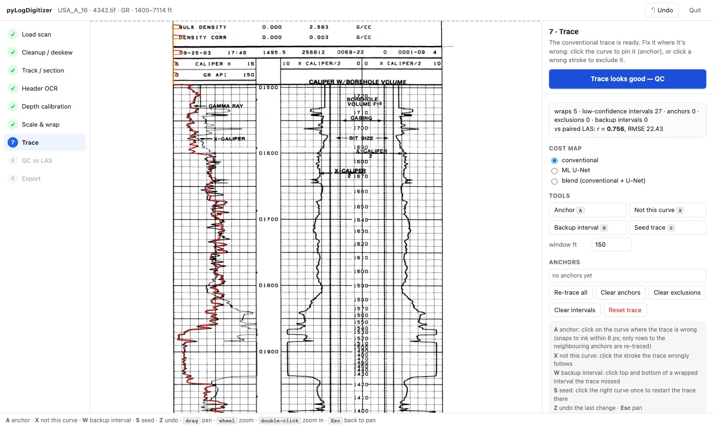
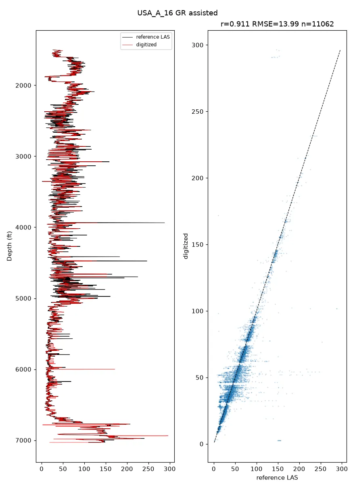
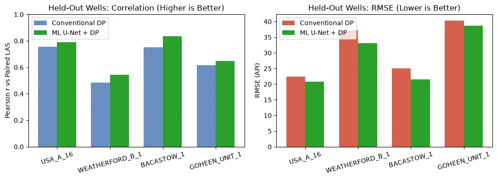

Python · Scanned well logs
 pyLogDigitizer
pyLogDigitizer
pyLogDigitizer turns scanned paper well logs into LAS files, with a local browser app to check and fix every step.
- Version0.1.0
- LicenseAGPL-3.0 or later
Overview
Many old well logs exist only as paper scans. pyLogDigitizer finds the tracks and grid on a scan, straightens it, reads the depth labels, and traces each curve into numbers you can save as a LAS file.
A guided browser app runs on your own computer (nothing is uploaded), so you can click to fix a trace before export. An optional machine-learning model learns from your corrections. It is early-stage research software, so check every digitized curve before use.

Examples
Example scans and LAS files are from the Kansas Geological Survey.



Key features
Layout and scales
Finds tracks and grids, straightens the scan, reads depth labels, and calibrates scales, including backup scales.
Curve tracing
A fast tracer in Rust with a Python fallback. Click anchor points to re-trace one stretch.
Optional ML
A U-Net learns from your corrected traces, and batch runs send unsure curves to review.
Check and export
Compares with a reference LAS and writes LAS 2.0. Everything runs locally.
Installation
pip install pylogdigitizerThe browser app, the faster tracer, and the ML model are optional add-ons; the README lists them.
Citation
Lai, L.S.-H. (2026) pyLogDigitizer. Zenodo, https://doi.org/10.5281/zenodo.23832013
pyLogDigitizer is under the GNU Affero General Public License 3.0 or later.